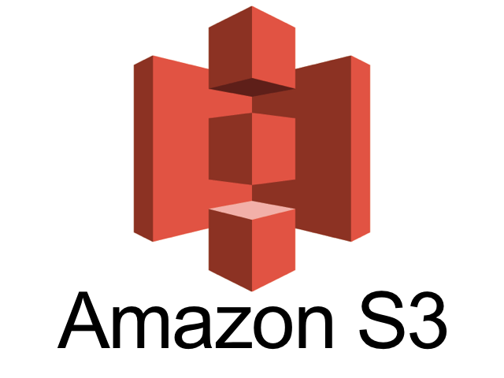
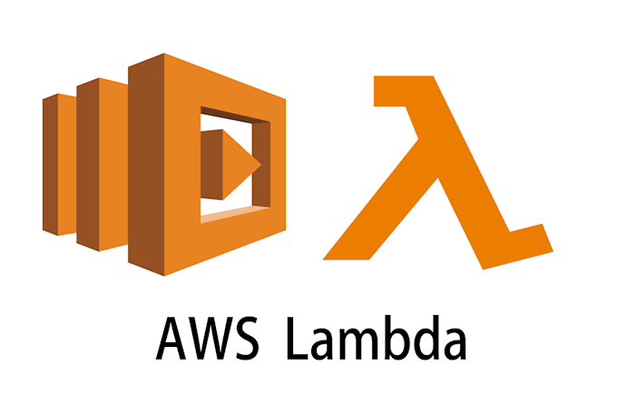

Introdução
Este relatório apresenta o processo de implementação de ferramentas na empresa Abstergo Industries, realizado por Eduardo Cedro de Souza Junior. O objetivo do projeto foi elencar 3 serviços AWS, com a finalidade de realizar diminuição de custos imediatos.
Na produção farmacêutica, a AWS oferece soluções escaláveis e eficientes que podem substituir infraestruturas físicas caras, melhorar a gestão de dados e otimizar processos.
Descrição do Projeto
O projeto de implementação de ferramentas foi dividido em 3 etapas, cada uma com seus objetivos específicos. A seguir, serão descritas as etapas do projeto.
Etapa 1: Amazon EC2 Auto Scaling (Escalonamento Automático de Servidores)
Amazon EC2 Auto Scaling
Garantir que a Abstergo tenha o número correto de instâncias EC2 em execução para lidar com a carga da sua aplicação, de forma automática e eficiente.
A Abstergo Industries possui servidores físicos que ficam subutilizados fora de picos de produção. Com o Amazon EC2 Auto Scaling, a infraestrutura ajusta automaticamente o número de instâncias (servidores virtuais) conforme a demanda.
Economia: Paga-se apenas pelo uso real, evitando custos com servidores parados.
Etapa 2: Amazon S3 Intelligent-Tiering (Armazenamento de Dados com Custos Otimizados)
Amazon S3 Intelligent-Tiering
Otimizar custos de armazenamento em nuvem automaticamente, movendo dados entre camadas (tiers) de armazenamento conforme padrões de acesso sem comprometer a disponibilidade ou a performance.
A indústria farmacêutica lida com grandes volumes de dados (pesquisas, registros de produção, compliance). O Amazon S3 Intelligent-Tiering classifica automaticamente os dados em camadas de armazenamento (frequente, pouco acessado, arquivamento).
Economia: Redução de até 70% nos custos de armazenamento em comparação a servidores locais.
Etapa 3: AWS Lambda (Processamento sem Servidores Permanentes)
AWS Lambda
Eliminar custos com servidores para tarefas eventuais.
A Abstergo Industries executa tarefas como análise de lotes e relatórios de forma esporádica. O AWS Lambda permite rodar códigos (ex: Python, Java) sem manter servidores ativos 24/7.
Economia: Cobrança apenas pelo tempo de execução (milissegundos), sem custos fixos.
Conclusão
A implementação dos serviços AWS na Abstergo Industries proporcionará:
Redução de Custos
Redução imediata de custos com infraestrutura física e servidores ociosos.
Otimização de Armazenamento
Otimização de armazenamento de dados com menor custo operacional.
Processamento Eficiente
Processamento eficiente de tarefas sem necessidade de servidores dedicados.
Recomendações:
- Monitorar os custos mensais no AWS Cost Explorer para ajustes contínuos.
- Explorar outros serviços como Amazon RDS (banco de dados gerenciado) e AWS Batch (processamento em lote).
Anexos
Assinatura do Responsável pelo Projeto:
Eduardo Cedro de Souza Junior